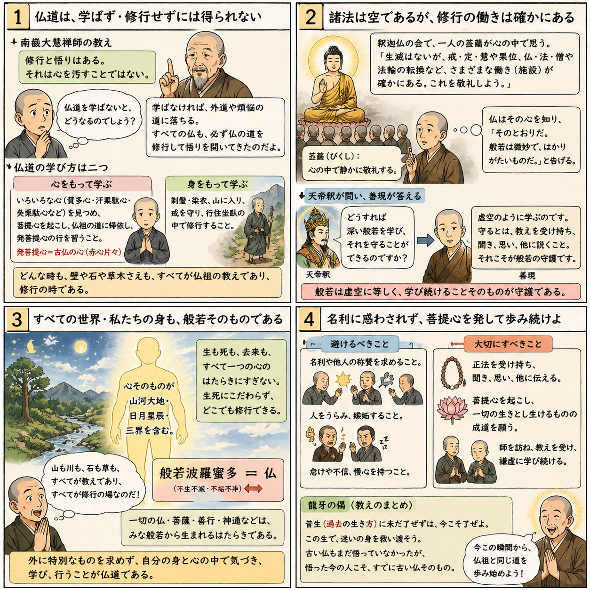

七十五巻 巻一覧
正法眼藏第四 身心學道
原文・現代語訳の全文は 全文ページを参照してください。
優先度（思想の核）
学道を心で学ぶことと身で学ぶことに分け、心の方では菩提心・平常心・古佛心（牆壁瓦礫）へ、身の方では赤肉団・真実人体・出家の行儀へと展開する、実践論の中核篇です。「修證」の系譜（南嶽大慧の引用）とも接続し、後巻の坐禅儀・坐禅箴への橋にもなります。
語彙の足場
- 修證：修行と悟りを離さない語。冒頭で引用される南嶽大慧の句と対読。
- 心學道：諸心を学び、放下・拈擧など多様な入り方を含む。
- 平常心：日常の当たり前が法として開く、という立場（単なる気楽さではない）。
- 身學道：赤肉団としての身体で学ぶ。捨家出家・八戒など行相と結合。
原文（要点の抜粋）
抜粋は doc/正法眼蔵.txt に準拠します。原文の参照元:
https://shomonji.or.jp/zazen/doc/genzou.html
佛道は、不道を擬するに不得なり、不學を擬するに轉遠なり。
南嶽大慧禪師のいはく、修證はなきにあらず、染汚することえじ。
佛道を學習するに、しばらくふたつあり。いはゆる心をもて學し、身をもて學するなり。
図解（イラスト）

深掘り（読解の手掛かり）
「山河大地これ心なり」の一節は、唯心論の教科書的読みに吸い込まれやすいですが、道元は直後に一心の所見の一齊や牆壁瓦礫へ振り、大小・内外の度量に捕らえない学びへ運びます。比喩に逃げず、文の起伏を追ってください。